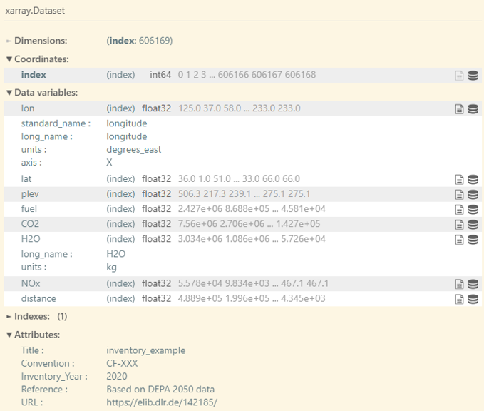

Input data
OpenAirClim requires several input data to be present before executing a simulation run.
Configuration file
A configuration file serves as the main user interface to the OpenAirClim
framework. The TOML format is used, which is known for
its simple syntax and human readability. Refer to example/example.toml for
an example configuration.
The configuration file is structured using tables which are collections of
key/value pairs. Each table is defined by a header, i.e. a [string] enclosed
by square brackets. Each table represents a section of the configuration file.
The comments in example.toml describe specific settings more in detail. Here,
an overview over the different tables (sections) of the configuration file is
given:
[species]This section defines the atmospheric species present in the emission inventories as well as the desired output species. Note that the name of the input and output species can differ. For example, a"NOx"input can produce an output for"O3","CH4","PMO"and"SWV". Use the GUI to ensure that your combination is correct.[inventories]This section specifies the input directory and emission inventories used for the simulation run. Additionaly, “base” emission inventories can be defined, which describe background air traffic if the main inventories only constitute a subset of global air traffic. This is only relevant for the computation of the contrail climate impact.[output]This section defines the simulation output. Using the flagsrun_oac(calculate all species),run_metrics(calculate climate metrics),run_plot(generate plots) andconcentrations, parts of the simulation workflow can be switched on and off.[time]This section defines the simulation period for the simulation. Therangesetting defines the period - note that it is currently not possible to use a step other than one year (see #116). Iffileis set in this section, an additional time evolution is read and processed. Please refer to Time Evolution for more details.[background]This section defines the atmospheric background, notably the concentration of CO₂, CH₄ and N₂O. OpenAirClim’s repository data includes the SSP scenarios by default.dircan be left unset to use the shared repository data cache (see Downloading repository data) or set explicitly to point at your own data.[responses]This section comprises settings of the implemented response surfaces and methodologies used. As with[background],dircan be left unset to use the shared repository data cache instead of a manually specified folder.[temperature]This section defines the climate sensitivity parameters and efficacies of atmospheric species relevant for the computation of temperature changes.[metrics]The arraytypesdefines the climate metrics which should be computed and written to the output. The arraysHandt_0define time horizons and start times for the metrics calculations. The program iterates over these arrays permuting over all combinations.[aircraft]The strings in arraytypescorrespond to aircraft identifiers present in the emission inventories. This functionality is convenient for the classification of different aircraft types with different properties relevant for the climate impact calculation. For the contrail module, a set of aircraft-specific variables are required (see the contrail module user guide). This data can also be provided as a .csv file. The most convenient way of viewing and editing this data is through the GUI.[parametric]This section enables a post-processing parametric approach for scaling CO₂ emissions and non-CO₂ radiative forcing values, as an alternative to running the full OpenAirClim workflow. See the parametric scenarios documentation for details.
Emission inventories
The emission inventories comprise spatially resolved aircraft emissions on a
yearly basis, stored as netCDF files using a flat data structure, i.e. an
unordered list of entries. Only the naming conventions and units defined in the
example inventories should be used. The entry Inventory_Year in the attribute
section of the netCDF file defines the inventory year.

If this is your first time using OpenAirClim, we recommend starting with the example or artificially generated emission inventories. The realistic emission data sets created as part of the DLR internal Development Pathways for Aviation up to 2050 (DEPA 2050) project, comprising global air traffic in 5-year steps between 2020 and 2050, can be downloaded from Zenodo using the command line:
oac-download-zenodo 11442322 -o "example/input/"
Depending on the settings chosen in the configuration file, the computational time of the configured simulations could be long. If you are testing or developing OpenAirClim, artificially generated data may be more convenient. To generate a series of emission inventories comprising random emission data using the built-in generator:
oac-create-artificial-inventories -o "example/input/"
It is also possible to create emission inventories from other sources, such as from ADS-B data or using a trajectory generator. Check out the OpenAirClim addon gedai if you are interested in this. Please use its own Issues workflow on GitHub for questions specific to these conversion tools. Be aware that generating OpenAirClim-compatible emission inventories in this manner can be time-consuming and computationally expensive.
Time evolution (optional)
If no extra evolution file is specified in the configuration, OpenAirClim performs a temporal interpolation between discrete inventory years. Alternatively, a time evolution of type normalization or scaling can be specified in another netCDF file. For more details on that topic, including how to generate example evolution files, refer to the Time Evolution documentation.